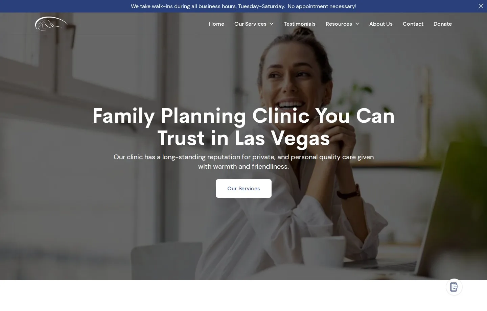
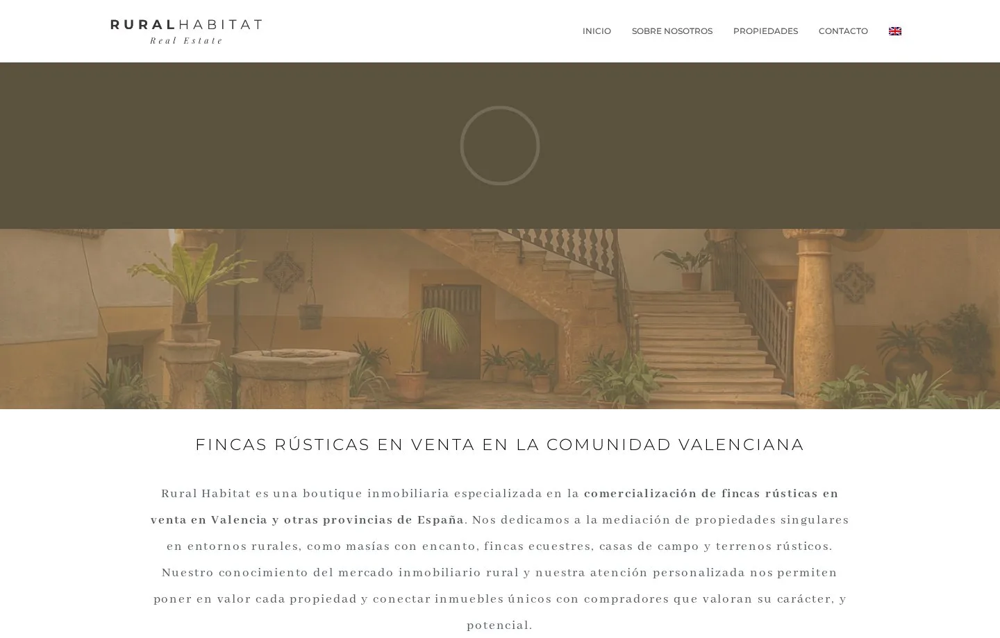

Clinic & Health
Birth Control Care Center
A Las Vegas clinic website that brings practical family-planning information, treatment details and scheduling pathways into one place.
Explore website study ↗Industry-based portfolio
Explore authentic desktop and mobile screenshots from publicly accessible websites. Every study links to its live source.
Live website studies
Observe real navigation, visual direction and customer experiences.

Clinic & Health
A Las Vegas clinic website that brings practical family-planning information, treatment details and scheduling pathways into one place.
Explore website study ↗
Hotel & Retreats
An immersive lodge website where dramatic imagery, nature and individually designed suites set the stage for an Okavango Delta stay.
Explore website study ↗
Hotel & Retreats
A wellness resort experience that gives visitors room to explore destinations, activities and the kind of stay that fits them.
Explore website study ↗
Hospitality & Stays
A Copenhagen hotel site combining refined interiors, room discovery and dining information in a restrained visual experience.
Explore website study ↗
Hospitality & Stays
A boutique hotel's digital presentation connecting its Pioneer Square location, accommodation choices and food-and-drink experiences.
Explore website study ↗
Property & Real Estate
A Spanish real-estate website centered on countryside property searches, regional context and available listings.
Explore website study ↗These studies document external public websites. Inclusion does not imply Oyeola designed or owns them.